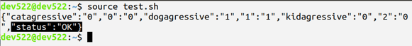
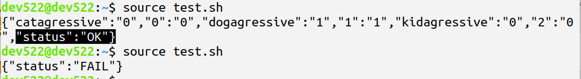
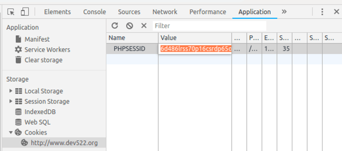
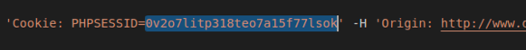

OAuth and Access Control
Objectives
Estimated Time: 15 minutes
Part 1:
We learned that for web applications, it is important to apply access control consistently throughout the entire application. In this exercise, we are examining a flaw that allows regular users to perform administrative functions. To explore this flaw, we first execute these actions as administrator to learn what is possible and then later try to replay these actions as a normal user.
Part 2:
In this exercise, you will walk through an OAuth authentication and later demonstrate how this application does not secure its OAuth tokens successfully
Requirements
- Lab VM
Part 1: Access Control
No Hints
Open http://lab-3.3.sans.labs/index.php in a browser. Feel free to explore on your own at this point. An administrator is able to adjust the status of an animal in the shelter (for example, flip the "Cat Aggressive" status) by clicking on the respective icon in the page describing an individual animal. Try to perform this action as a normal user. Admin username/pass is sec522/training and regular user is hackercat/training
Step by Step
-
Open http://lab-3.3.sans.labs/index.php in Chrome.
-
Click the "Start Exercise" button. This will direct you to our animal shelter login page.
-
Log in as an administrator (username: sec522, password: training). You will see a list of animals up for adoption.
-
Click on an animal's image (for example, the first cat, "Cinnamon"). This will display a page with details about this particular animal.
-
Bellow the image, you will see three icons. Click on one of the icons and it will change color from green to red (or red to green if it was red).

Image of Individual Animal with Icons Indicating Status
-
Click on the "Log Out" link (top of the page below the title of the page).
-
Click on the "Log In" link.
-
Log in as a normal user (username: hackercat, password: training).
-
Click on an animal.
-
Verify that clicking on the animal's "status icons" does nothing.
-
Click on the "Log Out" link.
-
Click on the "Log In" link.
-
Log in as an administrator (username: sec522, password: training).
Now we will explore what happens when the administrator clicks on one of the status icons.
-
Click on an animal's picture again to end up on the animal's individual page.
-
Open the Google Chrome developer tools by pressing CTRL-Shift-I.
-
Select the "Network" tab in the developer tools.

Google Chrome Developer Tools With Network Tab Selected
-
Click on the "Dog" icon to change the animal's "Dog Aggressive" status. This will create a new entry in the developer tool window for "flip.php".
-
Right-click on the "flip.php" entry and select "Copy" -> "Copy as cURL".

Copy "flip.php" Request as cURL
-
Open an editor (for example, Visual Studio Code) and paste the request into an empty file.
-
Save the file (recommended name: "test.sh" in the sec522 home directory, /home/sec522).
-
Open a terminal.
-
Execute the file:
source /home/sec522/test.shYour output will look like.

Output of test.sh
Note
The highlighted part in the end "status":"OK". This indicates that the script ran successfully. At this point, you are still logged in as an administrator, and a successful script is what we expect.
-
Click the "Log Out" link.
-
Run the script again, just like above:
source /home/sec522/test.shThis time, the output will be an error:

Terminal Output After Running the Script a Second Time After Logging Out
The script failed this time because "sec522" is no longer logged in, and the cookie included in the prior request in test.sh is no longer valid.
-
Log in as a normal user again (username: hackercat, password: training).
-
Open the "Application" tab in Chrome's Developer Tool. Note that, depending on your screen resolution, this option may be available by clicking on the '>>' symbol in the top right area of the developer tools (see picture below).

Opening the Application Tab
-
Next, click on "Cookies" in the left part of the developer menu.
-
Click on "http://www.sec522.org" under "Cookies".
-
Double-click on the "Value" to the right of "PHPSESSID". It will turn orange.

Highlighting the Cookie Value
-
Right-click on the highlighted value and select "Copy".
-
Open the "test.sh" script you created earlier in your favorite editor. If you are using Visual Studio Code, all you need to do is open the editor and it should automatically open the last edited file.
-
Find the cookie value. It will be the random string after "PHPSESSID=" and replace it with the cookie value you copied in step 30. Just highlight the old value and "Paste" to overwrite it. If there is a single quote at the end of the session ID, do not delete it.

Highlighted Cookie Value
-
Exit the editor.
-
Switch back to the terminal.
-
Run the script again. This time, the request should succeed. The figure below shows the terminal with all three requests: first, the one using the administrator's cookie; next, the failed request after the administrator logged out; and finally, the request we just sent with the regular user's cookie, which succeeded as well.
The final request should not have succeeded. This proves that a normal user can execute an administrative request as long as the user knows what request to send.
You may want to now return to the browser to check if the information was changed. You can also make additional edits to the script. Close to the end of the request you should see an "animalid" parameter that can be used to pick different animals. Experiment with it.
Please suggest ways to fix the issues in the applications. You can review the source code of the script at http://www.sec522.org/accesscontrol/api/flip.phps .
Part 2: OAuth
No Hints
The exercise starts at http://defendapp.com/shelter/index.php. The basic steps are explained as part of the website.
Step by Step
-
The exercise starts at http://www.defendapp.com/shelter/index.php. The page implements a simple calendar display. But to use it, you need to allow the calendar page to retrieve your calendar from the animal shelter site. Click on the link on the page to be sent to the animal shelter.
-
At the animal shelter, you will need to log in (if you are not already logged in). The username is "sec522", the password is "training".
-
Next, a simple page will ask you for permission to use the calendar. Inspect the URL. It will contain the client_id, which identifies the application requesting access. The "state" variable is used to identify the response returned to the client. Allow access by clicking "yes".
-
You will now be redirected back to the volunteer calendar app and your schedule should appear.
-
Next, click on the "problem" link to learn more about the issue causing authentication tokens to leak.
-
The problem page suggests that SQL injection is used to retrieve the tokens. Click on the "search page" link to be directed to the vulnerable page.
-
Click the "Debug" checkbox
-
Enter a single quote (') in the search box and hit "Submit"
-
You will now see the vulnerable statement. The "animalname" parameter is injectable, and we can use a union statement to retrieve additional data. The union statement needs to retrieve the same number of columns as the original statement (7). The second column ("animalname") is easily displayed and we will use it for our exploit. Enter as a search:
Important: there is a space after the two dashes '--'.
' UNION SELECT 1,access_token,2,3,4,5,6 FROM oauth.oauth_access_tokens LIMIT 1 --The token will be displayed below a broken picture on the result page.